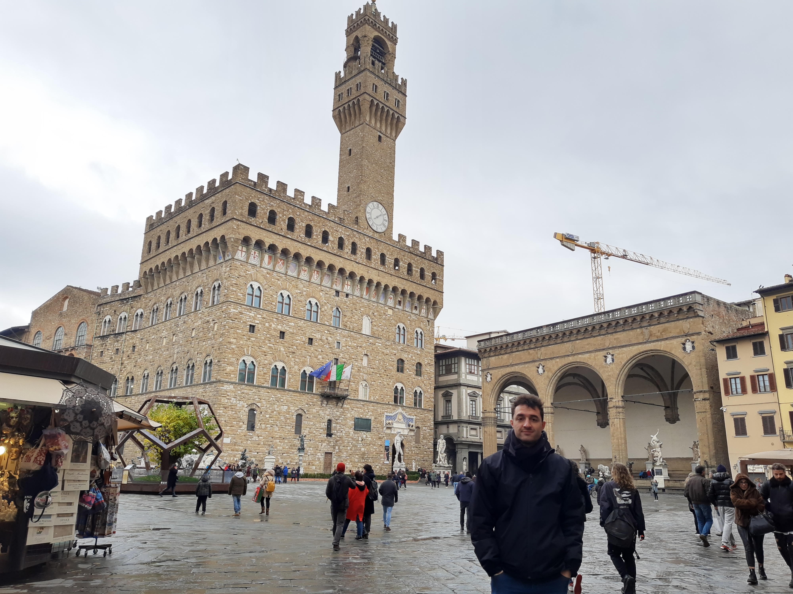
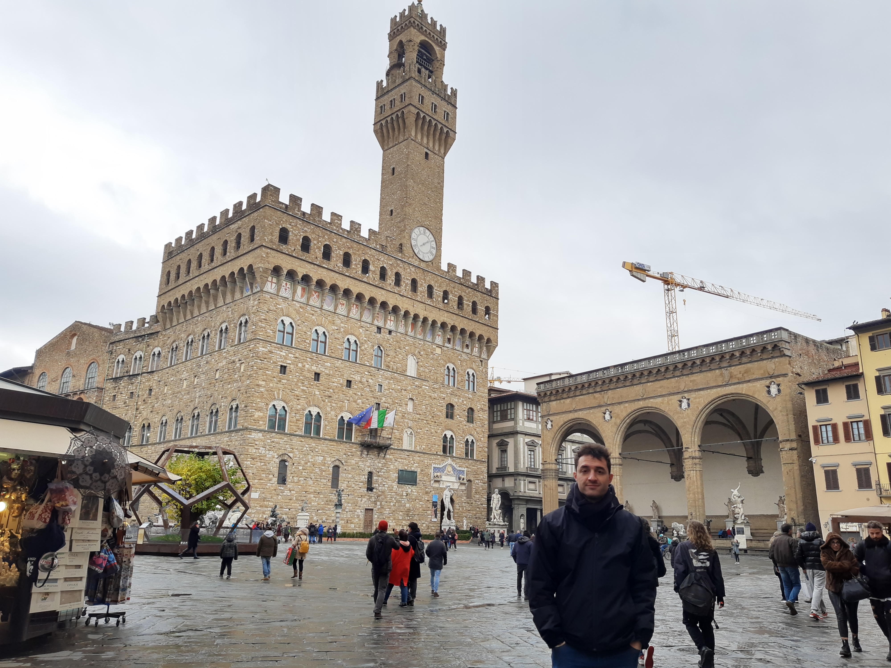
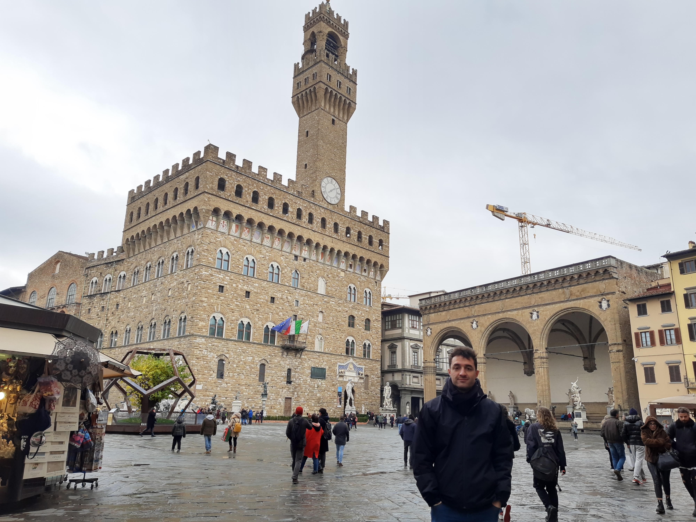

Mi nombre es Leonardo Patrono, nacido en Córdoba, Argentina.
Soñador por naturaleza, sumamente curioso y con un deseo permanente de aprender, soy de esas
personas que se quejan pero no pueden vivir sin sentir esa permanente incomodidad de sentirse fuera
de la zona de confort. Pues una vez dentro de ella, llegado un tiempo comienzo a sentirme aburrido y
vacio. Creo que es eso lo que me ha fomentado el deseo de querer conocer nuevas realidades,
costumbres, lugares, culturas, vidas distintas a la mia.

Creé este blog para compartir mis pequeñas y humildes experiencias buscando crear una bonita
comunidad
donde todos podamos compartir conocimientos y sueños. Ya que si el conocimiento no es compartido, no
existe la evolucion ni el progreso
Hagamos que esto suceda!